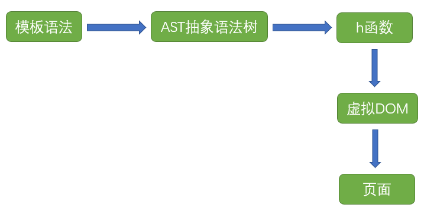
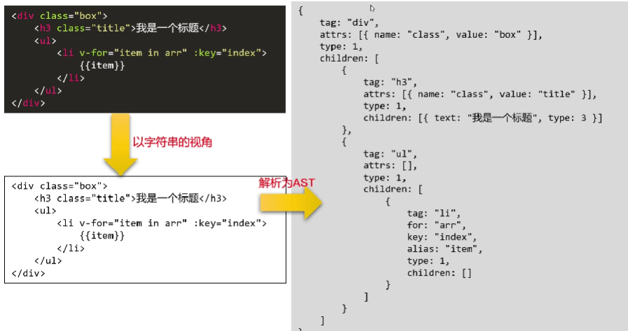
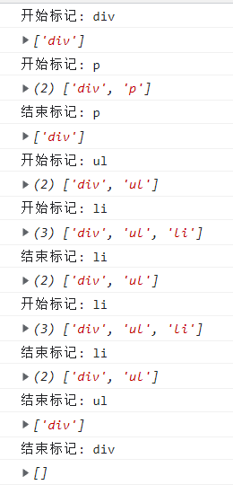
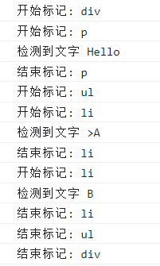
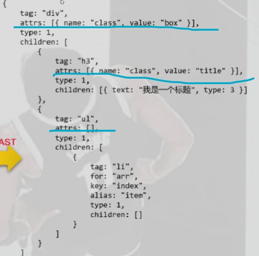

AST抽象语法树 抽象语法树（Abstract Syntax Tree）h函数 来转化为虚拟dom，然后进行diff算法。
1 h ('a' , {props : {href : 'www.kyriecqy.github.io' }}, 'cqy' )
那这些数据肯定不是我们手动写出来的，所以我们就需要用抽象语法树将正常的HTML模板语法转化成能传入到h函数中的对象。
抽象语法树与虚拟DOM的关系
h函数相当于是抽象语法树的产物，又是虚拟DOM的起点

AST实现原理 在Vue中，我们的模板语法都写在<template></template>标签中。其实在Vue的底层是用字符串的角度来看编写在template中的内容，而不是通过html的角度。

AST实现理论过程 将html模板的字符串传给一个函数，这个函数中主要使用两个栈来实现AST
我们用如下的html模板字符串来模拟
1 2 3 4 5 6 <div > <p > Hello</p > <ul > <li > A</li > </ul > </div >
有一个指针会从开头开始扫描整个字符串。当指针识别到开始标记div将它压入栈1，并将div具体数据（{'tag': 'div', 'children': []}）压入栈2。
指针接着向下扫描，这个时候会扫描到p的开始标签与div开始标签之间的换行和空格，但是会被忽略。（在接下来的分析中会忽略这一步）
指针接着识别的开始标记p将它压入栈1，并将p具体数据（{'tag': 'p', 'children': []}）压入栈2。
指针接着向下识别，一直到p标签的结束标签为止，这就收集到了文本Hello。如果遇到的是文本，那么就将文本添加到栈2处于栈顶的元素（在此处是p）的children中，如下图所示（栈2中标签的具体数据省略没写）
指针接着向下识别到结束标签p，这个时候会将栈1中栈顶元素弹栈，栈2中的栈顶元素先出栈，然后添加到栈顶元素（在此处是div）的children中 （因为当识别到结束标签，说明这个标签的整个内容都识别完毕了，就要将他添加到前一项的children中）
指针接着识别到开始标签ul，将他压入栈1，他的具体数据（{'tag': 'ul', 'children': []}）压入栈2。
指针接着识别到开始标签li，将他压入栈1，他的具体数据压入栈2。
指针接着向下识别，一直到li标签的结束标签为止，这就收集到了文本A。因为是文本，所以只将它添加到栈2处于栈顶元素（在此处是li）的children中
指针接着向下识别到结束标签li，这个时候会将栈1中栈顶元素弹栈，栈2中的栈顶元素先出栈，然后添加到栈顶元素（在此处是ul）的children中
指针接着识别到结束标签ul，这个时候会将栈1中栈顶元素弹栈，栈2中的栈顶元素先出栈，然后添加到栈顶元素（在此处是div）的children中
最后指针识别到结束标签div,，这个时候会将栈1中栈顶元素弹栈，这个时候栈2中只要一项（字符串全部识别完成），所以不弹栈，用于返回最后这个结果
识别开始结束标签 为了将字符串模式的语法解析为AST，我们首先需要识别开始和结束标签
1 2 3 4 5 6 7 8 9 10 11 12 13 14 15 16 17 18 19 20 21 22 23 24 25 26 27 28 29 30 31 32 33 34 35 36 37 38 39 40 41 42 43 44 45 46 47 48 49 50 51 52 53 54 export default function parse (templateStr ) { var index = 0 var rest = '' var startRegExp = /^\<([a-z]+[1-9]?)\>/ var endRegExp = /^\<\/([a-z]+[1-9]?)\>/ var stack1 = [] var stack2 = [] while (index < templateStr.length - 1 ) { rest = templateStr.substring (index) if (startRegExp.test (rest)) { let tag = rest.match (startRegExp)[1 ] console .log ('开始标记:' ,tag); stack1.push (tag) stack2.push ([]) index += tag.length + 2 console .log (stack1); } else if (endRegExp.test (rest)){ let tag = rest.match (endRegExp)[1 ] console .log ('结束标记:' ,tag); if (tag == stack1[stack1.length - 1 ]) { stack1.pop () console .log (stack1); }else { throw new Error ('标签没有闭合' ) } index += tag.length + 3 } else { index++ } } }
接下来我们用一个例子来检验一下parse函数的功能
1 2 3 4 5 6 7 8 9 10 11 import parse from "./parse" let templateStr = `<div> <p>Hello</p> <ul> <li>A</li> <li>B</li> </ul> </div>` const ast = parse (templateStr)

识别标签之间文字 识别标签之间的文字的关键在于正则表达式的书写，我们需要识别结束标签之前的文字，但又不可以将开始标签包括进去
1 2 3 4 var wordRegExp = /^([^\<]+)\<\/([a-z]+[1-9]?)\>/
具体的代码：
1 2 3 4 5 6 7 8 9 10 11 12 13 14 15 16 17 18 19 20 21 22 23 24 25 26 27 28 29 30 31 32 33 34 export default function parse (templateStr ) { var index = 0 var rest = '' var startRegExp = /^\<([a-z]+[1-9]?)\>/ var endRegExp = /^\<\/([a-z]+[1-9]?)\>/ var wordRegExp = /^([^\<]+)\<\/([a-z]+[1-9]?)\>/ var stack1 = [] var stack2 = [] while (index < templateStr.length - 1 ) { rest = templateStr.substring (index) if (startRegExp.test (rest)) { } else if (endRegExp.test (rest)){ } else if (wordRegExp.test (rest)) { let word = rest.match (wordRegExp)[1 ] if (!/^\s+$/ .test (word)) { console .log ('检测到文字' ,word); } index += word.length } else { index++ } } }

使用栈初步实现AST 通过上面的原理分析，我们很容易就可以实现以下代码
1 2 3 4 5 6 7 8 9 10 11 12 13 14 15 16 17 18 19 20 21 22 23 24 25 26 27 28 29 30 31 32 33 34 35 36 37 38 39 40 41 42 43 44 45 46 47 48 49 50 51 52 53 54 55 56 57 58 59 60 61 export default function parse (templateStr ) { var index = 0 var rest = '' var startRegExp = /^\<([a-z]+[1-9]?)\>/ var endRegExp = /^\<\/([a-z]+[1-9]?)\>/ var wordRegExp = /^([^\<]+)\<\/([a-z]+[1-9]?)\>/ var stack1 = [] var stack2 = [{'children' : []}] while (index < templateStr.length - 1 ) { rest = templateStr.substring (index) if (startRegExp.test (rest)) { let tag = rest.match (startRegExp)[1 ] stack1.push (tag) stack2.push ({'tag' : tag, 'children' : []}) index += tag.length + 2 } else if (endRegExp.test (rest)){ let tag = rest.match (endRegExp)[1 ] if (tag == stack1[stack1.length - 1 ]) { stack1.pop () let pop_arr = stack2.pop () if (stack2.length != 0 ) { stack2[stack2.length -1 ].children .push (pop_arr) } }else { throw new Error ('标签没有闭合' ) } index += tag.length + 3 } else if (wordRegExp.test (rest)) { let word = rest.match (wordRegExp)[1 ] if (!/^\s+$/ .test (word)) { stack2[stack2.length -1 ].children .push ({'text' : word, type : 3 }) } index += word.length } else { index++ } } return stack2[0 ].children [0 ] }
得到的结果：
识别开始标签中的属性 有些开始标签中会有一些属性，例如class，id等，我们也需要识别出来，并将他以键值对的形式存储在attrs数组中，如下图划线部分的样子

那么为了能识别到这些属性，我们需要对开始标签的正则做一些修改
1 2 3 4 5 6 7 var startRegExp = /^\<([a-z]+[1-9]?)(\s[^\<]+)?\>/
然后我们需要对识别开始标签的代码块做一些修改，我们会使用一个独立的函数来对识别到的属性进行处理，最后将attrs加入
1 2 3 4 5 6 7 8 9 10 11 12 13 14 15 16 17 18 19 20 21 22 23 24 25 26 27 28 29 30 31 32 33 34 35 36 37 38 39 40 41 42 43 44 45 46 47 export default function parse (templateStr ) { var index = 0 var rest = '' var startRegExp = /^\<([a-z]+[1-9]?)(\s[^\<]+)?\>/ var endRegExp = /^\<\/([a-z]+[1-9]?)\>/ var wordRegExp = /^([^\<]+)\<\/([a-z]+[1-9]?)\>/ var stack1 = [] var stack2 = [{'children' : []}] while (index < templateStr.length - 1 ) { rest = templateStr.substring (index) if (startRegExp.test (rest)) { let tag = rest.match (startRegExp)[1 ] let attrsStr = rest.match (startRegExp)[2 ] let attrs = parseAttrsStr (attrsStr) stack1.push (tag) stack2.push ({'tag' : tag, 'children' : [],'attrs' : attrs}) console .log ('开始标记:' ,tag); const attrsLength = attrsStr != undefined ? attrsStr.length : 0 index += tag.length + 2 + attrsLength } else if (endRegExp.test (rest)){ } else if (wordRegExp.test (rest)) { } else { } } return stack2[0 ].children [0 ] }
parseAttrsStr函数来处理识别到的属性
这里有一个点需要注意，当我们得到识别到的属性如下：我们会很轻易的想到用split()方法按照空格分割这个字符串来得到完整的class属性和id属性。
1 ' class="aa bb cc" id="p"'
但其实是不可以这么干的，因为css支持在class中使用"aa bb cc"的写法，如果简单的使用split()会将类中的空格也当作要分割的，但其实"aa bb cc"作为一个整体是class的值
为了解决这个问题，我们可以用 一个变量来判断是否在属性内部 和 一个变量来保存断点 来完成
我们要先设置一个判断变量为false、断点为0，然后遍历整个字符串，当遇到 双引号 时这个变量取反
我们从字符串的最前面开始遍历，往下走，当遇到了一个 双引号 ，就将这个变量取反，当这个变量为true时，表示进入到了属性内部，这个时候我们要忽视空格
指针一直向下走，当又遇到一个 双引号 时，将这个变量取反，当变量为false时，表示不是在属性内部。
指针接着下移，当遇到一个空格，且这个时候判断变量为false（表示不在属性内）。那么这个时候就会收集断点到当前指针之前的所有内容，在这里就是class="aa bb cc"。
然后就会以如上的方法识别属性并添加，当来到最后一项属性时，由于字符串的最后没有空格，就无法将最后一项进行收集（因为收集的前提是：判断变量是false且遇到空格）。这个时候我们需要手动收集
还有一点就是，传入的字符串的第一个字符肯定是空格，因为标签与第一个属性之间有空格，且在这个空格处判断变量正好是false，所以会将这一空格识别为一项属性，要手动忽略
1 2 3 4 5 6 7 8 9 10 11 12 13 14 15 16 17 18 19 20 21 22 23 24 25 26 27 28 29 30 31 32 33 34 35 36 37 38 39 40 41 42 43 44 45 46 47 48 49 50 export default function parseAttrsStr (attrsStr ) { if (attrsStr == undefined ) return [] let isIn = false let point = 0 let resultArr = [] let attrs = [] for (let i = 0 ; i < attrsStr.length ; i++) { const char = attrsStr[i] if (char == '"' ) { isIn = !isIn } else if (char == ' ' && !isIn) { if (!/^\s*$/ .test (attrsStr.substring (point, i))) { resultArr.push (attrsStr.substring (point, i).trim ()) point = i } } } resultArr.push (attrsStr.substring (point).trim ()) for (let i = 0 ; i < resultArr.length ; i++) { let attrName = resultArr[i].split ('=' )[0 ] let attrValue = resultArr[i].split ('=' )[1 ] attrValue = attrValue.replace (/^"(.+)"$/ , '$1' ) attrs.push ({ 'name' : attrName, 'value' : attrValue }) } return attrs }
得到的转化好的对象结果：
当我们在主函数parse中调用此函数识别属性之后就可以得到完整的AST
使用的例子
1 2 3 4 5 6 7 8 9 10 11 let templateStr = `<div> <p class="aa bb cc" id="p">Hello</p> <ul> <li>A</li> <li>B</li> </ul> </div>` const ast = parse (templateStr)console .log (ast);
得到的AST：
最后 入口
1 2 3 4 5 6 7 8 9 10 11 12 13 import parse from "./parse" let templateStr = `<div> <p class="aa bb cc" id="p">Hello</p> <ul> <li>A</li> <li>B</li> </ul> </div>` const ast = parse (templateStr)console .log (ast);
parse函数
1 2 3 4 5 6 7 8 9 10 11 12 13 14 15 16 17 18 19 20 21 22 23 24 25 26 27 28 29 30 31 32 33 34 35 36 37 38 39 40 41 42 43 44 45 46 47 48 49 50 51 52 53 54 55 56 57 58 59 60 61 62 63 64 65 66 67 68 69 70 71 72 73 74 75 76 import parseAttrsStr from "./parseAttrsStr" export default function parse (templateStr ) { var index = 0 var rest = '' var startRegExp = /^\<([a-z]+[1-9]?)(\s[^\<]+)?\>/ var endRegExp = /^\<\/([a-z]+[1-9]?)\>/ var wordRegExp = /^([^\<]+)\<\/([a-z]+[1-9]?)\>/ var stack1 = [] var stack2 = [{'children' : []}] while (index < templateStr.length - 1 ) { rest = templateStr.substring (index) if (startRegExp.test (rest)) { let tag = rest.match (startRegExp)[1 ] let attrsStr = rest.match (startRegExp)[2 ] let attrs = parseAttrsStr (attrsStr) stack1.push (tag) stack2.push ({'tag' : tag, 'children' : [],'attrs' : attrs}) console .log ('开始标记:' ,tag); const attrsLength = attrsStr != undefined ? attrsStr.length : 0 index += tag.length + 2 + attrsLength } else if (endRegExp.test (rest)){ let tag = rest.match (endRegExp)[1 ] console .log ('结束标记:' ,tag); if (tag == stack1[stack1.length - 1 ]) { stack1.pop () let pop_arr = stack2.pop () if (stack2.length != 0 ) { stack2[stack2.length -1 ].children .push (pop_arr) } }else { throw new Error ('标签没有闭合' ) } index += tag.length + 3 } else if (wordRegExp.test (rest)) { let word = rest.match (wordRegExp)[1 ] if (!/^\s+$/ .test (word)) { console .log ('检测到文字' ,word); stack2[stack2.length -1 ].children .push ({'text' : word, type : 3 }) } index += word.length } else { index++ } } return stack2[0 ].children [0 ] }
parseAttrsStr函数
1 2 3 4 5 6 7 8 9 10 11 12 13 14 15 16 17 18 19 20 21 22 23 24 25 26 27 28 29 30 31 32 33 34 35 36 37 38 39 40 41 42 43 44 export default function parseAttrsStr (attrsStr ) { if (attrsStr == undefined ) return [] console .log (attrsStr); let isIn = false let point = 0 let resultArr = [] let attrs = [] for (let i = 0 ; i < attrsStr.length ; i++) { const char = attrsStr[i] if (char == '"' ) { isIn = !isIn } else if (char == ' ' && !isIn) { if (!/^\s*$/ .test (attrsStr.substring (point, i))) { resultArr.push (attrsStr.substring (point, i).trim ()) point = i } } } resultArr.push (attrsStr.substring (point).trim ()) for (let i = 0 ; i < resultArr.length ; i++) { let attrName = resultArr[i].split ('=' )[0 ] let attrValue = resultArr[i].split ('=' )[1 ] attrValue = attrValue.replace (/^"(.+)"$/ , '$1' ) attrs.push ({ 'name' : attrName, 'value' : attrValue }) } return attrs }